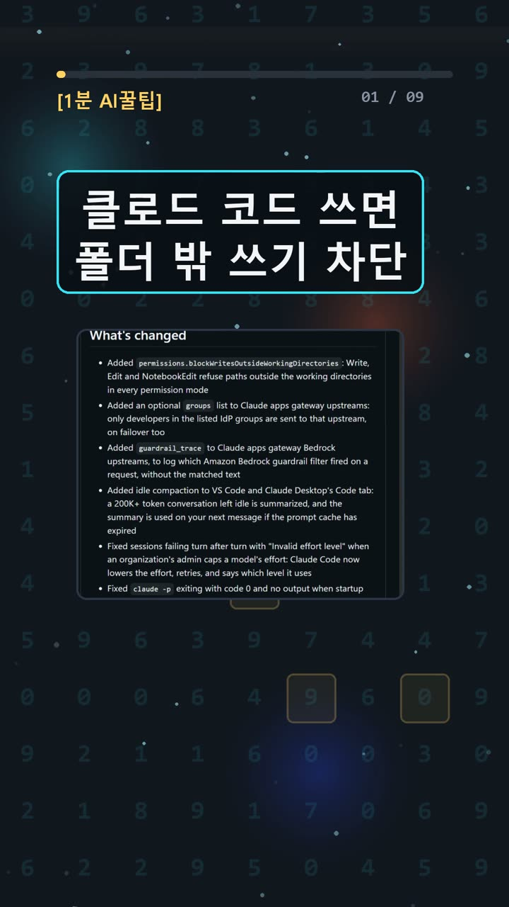
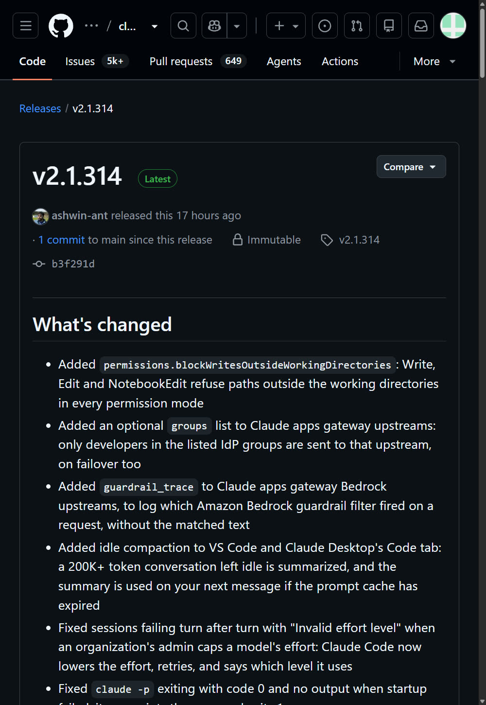
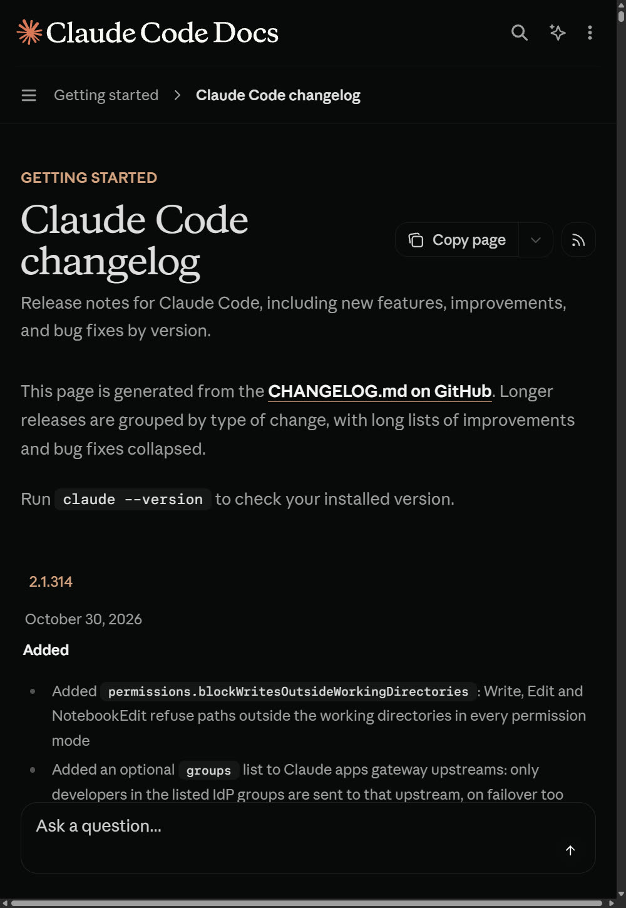
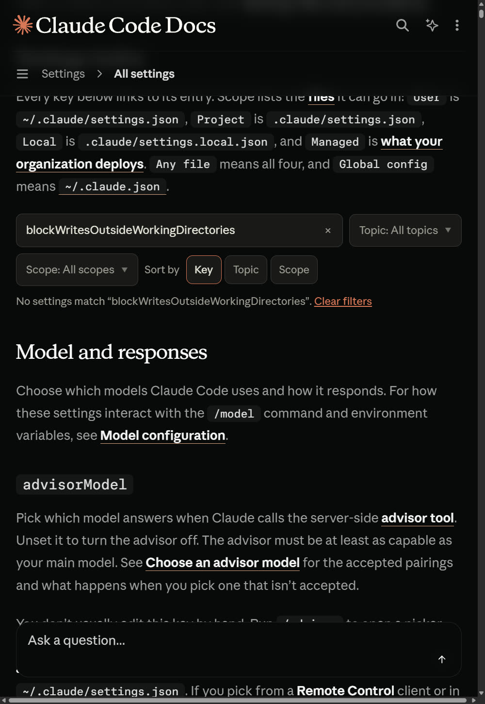

이 포스팅은 쿠팡 파트너스 및 토스쇼핑 쉐어링크 활동의 일환으로, 이에 따른 일정액의 수수료를 제공받습니다.
Claude Code 작업 폴더 밖 쓰기 막는 새 설정, 직접 확인한 범위

검증 범위 · 직접 확인 기록 · 확인 수준: partial (설치·실행 확인까지, 실제 차단은 미확인) · 이 글은 2026-10-31에 공식 출처를 열어 보고 우리 PC에서 직접 확인한 기록(확인 수준: partial)을 바탕으로 AI 도구와 함께 정리했습니다.
명령어·설정·실패 해결표 바로 보기 (무료 공개)명령어·설정·실패 해결표
| 구분 | 내용 | 해결 |
|---|---|---|
| 명령어 | claude --version | |
| 명령어 | /add-dir | |
| 명령어 | /permissions |
한눈에 보기
- Claude Code 2.1.314(공식 변경 기록 날짜: 2026년 10월 30일)에
permissions.blockWritesOutsideWorkingDirectories설정이 추가됐어요. 공식 원문은 *"Write, Edit and NotebookEdit refuse paths outside the working directories in every permission mode"*예요. - 막는 대상은 파일 도구 3개(Write·Edit·NotebookEdit)의 쓰기예요. 읽기, 셸 명령, MCP까지 모두 잠그는 "컴퓨터 전체 잠금"은 아니에요.
- 우리는 Windows에서 공식 실행 파일이 2.1.314로 실행되는 것까지만 확인했어요. 실제 차단 시험은 하지 못했어요(확인 수준: partial).
시작 전에 확인할 것
- 필요한 계정: Claude Pro/Max/Ultra/Team/Enterprise, Console 계정, 또는 지원하는 외부 API 제공자 인증이 필요해요. 무료 claude.ai 플랜에는 Claude Code 이용이 포함되지 않아요. 월 요금 숫자는 이번에 확인하지 않았어요.
- 버전: 쓰기 차단은 Claude Code 2.1.314 이상에서 쓸 수 있어요. 버전은 프로그램의 판 번호를 말해요. 읽기 차단(
blockReadsOutsideWorkingDirectories)은 v2.1.257 이상에 있는 별개의 옵션이에요. - 공식 지원 OS: macOS 13+, Windows 10 1809+/Windows Server 2019+, Ubuntu 20.04+, Debian 10+, Alpine 3.19+를 지원해요. 4GB 이상 RAM, x64/ARM64, 인터넷 연결이 필요해요.
- Windows 참고: Git for Windows는 권장·선택 사항이에요. 없으면 PowerShell 도구를 사용해요.
- 셸 격리: 셸은 명령어를 입력하는 창을 말해요. 셸 샌드박스(격리 상자)는 macOS/Linux/WSL2에서만 지원돼요. native Windows에서는 명령이 격리 없이 실행돼요.
설치 방법
1. 버전 확인하기 — 📄 공식 문서 기준 ① 터미널(명령어를 입력하는 검은 창)에 아래를 입력해요.
claude --version
② 2.1.314 이상이 보이면 준비 끝이에요. ③ 그보다 낮으면 공식 설치 안내에서 내 설치 방식에 맞는 업데이트 방법을 따라요. 공식 권장은 native 설치예요. npm 방식은 Node.js 22+가 필요해요.
2. (우리 방식) 격리 폴더에서 실행 파일만 확인하기 — ✅ 직접 해 봄 ① 기존에 쓰던 2.1.303은 건드리지 않았어요. 공식 2.1.314 win32-x64 실행 파일을 격리 폴더에만 받았어요. 설치 프로그램은 실행하지 않았어요. ② SHA256(파일 지문) 일치와 Authenticode(전자 서명) Valid를 확인했어요. 그다음 아래 명령을 실행했어요.
bin\claude.exe --version
③ 2.1.314 (Claude Code)가 나오고 종료 코드 0이면 성공이에요. --help도 종료 코드 0으로 끝났어요.
사용 방법
1. 설정 파일 찾고 백업하기 — 📄 공식 문서 기준 ① 프로젝트용은 .claude/settings.json, 사용자 전체용은 ~/.claude/settings.json, 나만 쓰는 로컬용은 .claude/settings.local.json이에요. 고치기 전에 꼭 복사본을 만들어 두세요. ② 파일을 찾았으면 다음 단계로 넘어가요. ③ 기존 내용을 통째로 덮어쓰지 마세요.
2. permissions에 한 줄 합치기 — 📄 공식 문서 기준 (JSON 구문만 ✅ 직접 해 봄) ① 이미 있는 permissions 객체 안에 아래 줄을 넣어요.
{
"permissions": {
"blockWritesOutsideWorkingDirectories": true
}
}
읽기도 막고 싶을 때만 "blockReadsOutsideWorkingDirectories": true를 따로 추가해요. ② 우리는 예제 파일을 PowerShell ConvertFrom-Json으로 읽어 구문 오류가 없는 것까지만 확인했어요. 실제 설정 파일에는 적용하지 않았어요. ③ JSON 오류가 나면 쉼표와 중괄호 짝부터 확인해 보세요.
3. 새 세션 시작하기 — 📄 공식 문서 기준 해당 프로젝트 폴더에서 Claude Code를 새로 시작해요. 시작한 폴더가 작업 디렉터리가 돼요.
4. 차단되는지 시험하기 — 📄 공식 문서 기준 (우리는 미실행) ① 빈 테스트 폴더 안에 project 폴더를 만들어요. 그 안에서 세션을 시작해요. ② 상위의 가짜 파일 ../outside.txt를 Write 도구로 만들어 달라고 요청해요. 도구가 거부되고 파일도 생기지 않는지 함께 확인해요. ③ 셸로 우회해서 쓰게 시키지 마세요. Edit·NotebookEdit, auto·bypassPermissions 모드는 따로 시험해야 해요.
5. 꼭 필요한 외부 폴더만 넓히기 — 📄 공식 문서 기준 --add-dir, /add-dir, additionalDirectories로 작업 범위를 넓힐 수 있어요. 다만 새 쓰기 차단과 정확히 어떻게 맞물리는지는 아직 시험하지 못했어요.

우리가 직접 해 본 결과
확인 수준: partial (설치·실행 확인까지, 실제 차단은 미확인)
이 설정을 고른 이유는 간단해요. auto 모드처럼 AI에 파일 수정을 맡길 때, 다른 저장소가 실수로 바뀌는 걱정을 덜어 줄 기능이었기 때문이에요. 진행은 아래 순서였어요.
- 공식 실행 파일 다운로드: 301,388,448바이트, 6.274초
- SHA256 일치 + Authenticode Valid 확인: 2.814초
--version출력2.1.314 (Claude Code): 0.773초, 종료 코드 0--help출력 저장: 0.17초, 종료 코드 0- 예제 JSON 구문 확인: 0.05초
이 초 수는 다운로드와 확인 작업에 걸린 시간이에요. 차단이 완료되는 시간이 아니에요.
우리는 여기서 막혔어요. 실제 AI를 부르려면 로그인과 외부 서비스 통신이 필요해요. 그런데 실행 환경이 localhost만 허용했고, 격리 설정에는 로그인도 없었어요. 그래서 설정 전후 비교, auto·bypassPermissions 시험, /permissions의 Recently blocked 확인을 전부 하지 못했어요. 권한을 바꿔 우회하지는 않았어요.
예상과 달랐던 점도 있어요. 설정 참조 문서에서 새 키를 검색하자 No settings match가 나왔어요. 기능이 없다는 뜻이 아니라, 상세 문서가 릴리스를 아직 따라가지 못한 상태로 보여요. 작업 중 시행착오도 있었어요. 로그용 PowerShell 명령에서 구문 오류가 한 번 났고, 브라우저가 file:// 열기를 막았어요. 그래서 임시 localhost 화면에 실제 로그를 다시 띄워 찍었어요. 그 사진은 원본 터미널 화면이 아니에요.

자주 막히는 곳
- "모든 걸 잠가 주겠지"라는 오해: 막는 건 Write·Edit·NotebookEdit 쓰기뿐이에요. 셸 격리는 공식 sandbox 안내를 따로 봐야 해요.
- native Windows에서 /sandbox만 켜면 될까요? 안 돼요. Windows에서 공식 셸 샌드박스를 쓰려면 WSL2가 필요해요.
- 읽기 차단 규칙을 그대로 믿기: 읽기 차단 문서의 예외·저장 규칙이 쓰기 차단에도 똑같다고 아직 단정할 수 없어요.
- 무료 계정으로 시도하기: 무료 claude.ai 플랜으로는 Claude Code를 쓸 수 없어요.

이번 결과는 한 번 시도한 기록이에요. 실제 차단 장면이 없으니 후속 시험 전까지는 공식 발표 내용으로만 봐 주세요. 원문은 공식 변경 기록과 권한 문서에서 확인할 수 있어요.
🧰 오늘의 실험실 생존 세트 — 밤새 실험 돌릴 때 쟁여 두는 것들


정리
blockWritesOutsideWorkingDirectories는 작업 폴더 밖으로 파일 도구가 쓰는 것을 막는 새 옵션이에요. 켜는 법은 한 줄이에요. 하지만 컴퓨터 전체 잠금은 아니에요. 그리고 우리는 아직 실제로 막히는 장면을 보지 못했어요. 다음에는 로그인된 환경에서 ../outside.txt 차단 시험을 해 보고 결과를 붙일게요.
이 글은 실제 실험 기록을 바탕으로 AI 도구와 함께 정리했어요.
혹시 글에서 틀린 부분이나 고쳐야 할 부분이 보이면 유튜브·스레드 댓글로 알려 주시면 정말 감사하겠습니다. 바로 확인해서 고칠게요!
🛒 다시 보기: 오늘의 생존 세트
🎙️ AI 음성이 궁금하다면
우리 채널 내레이션은 타입캐스트를 쓰지만, 영어·다국어 AI 음성을 실험해 보고 싶다면 ElevenLabs도 많이 쓰여요.
[광고·제휴] ElevenLabs 둘러보기🎬 쇼츠로 다시 보기 · 🧵 함께 이야기하기
🧵 스레드 @alligatorxor에서 오늘 실험 이야기 나누기 · ▶ 유튜브 새AI실험노트 다른 쇼츠 보기 · 📒 실험노트 홈